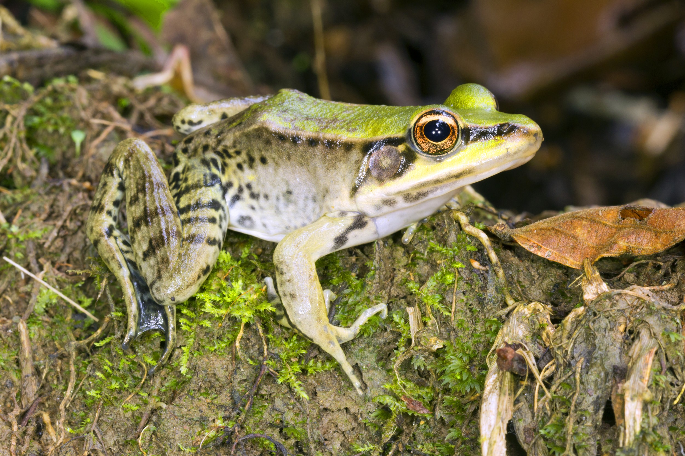
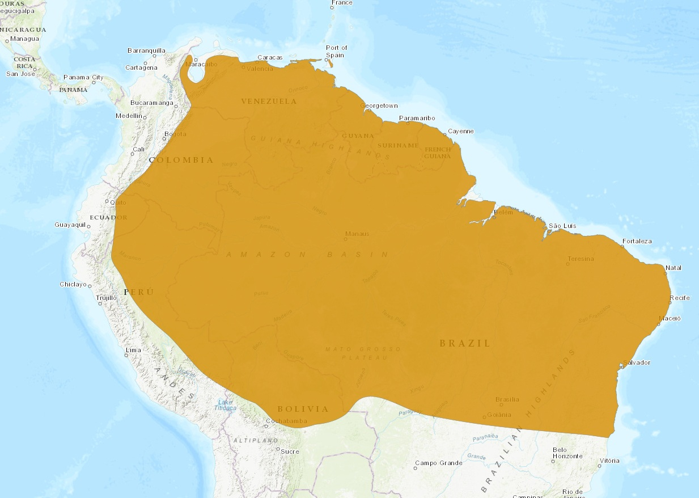

Nome popular sugerido: Rã-de-pés-do-pato ou Rã do Rio Amazônia
Rã da espécie Lithobates palmipes

(The IUCN Red List of Threatened Species, 2026)A localidade-tipo da espécie é o rio Amazonas, Brasil. A espécie tem distribuição cis-andina e ocorre no Brasil, Colômbia, Equador, Peru, Bolívia, Venezuela, Guiana e Suriname (Frost 2018). Oliveira et al. (2010) promovem o único registro da espécie no estado de Goiás conhecido até o momento, para o município de Piranhas.
(Vaz-Silva et al., 2020)CRC variando de 78 a 126 mm em machos (Hillis & de Sá 1988). Coloração dorsal verde-oliva a marrom com manchas escuras irregulares nos flancos e superfície dos membros. Ventre claro. Faixa dorsolateral evidente, superfície ventral e parte interna da coxa de coloração clara uniforme. Olhos proeminentes em posição lateral. Presença de membrana interdigital bem desenvolvida nos pés.
(Vaz-Silva et al., 2020)A alimentação é composta de ortópteros, besouros e aranhas, além de poderem comer algumas lagartas
(Com & Duellman, 1978)